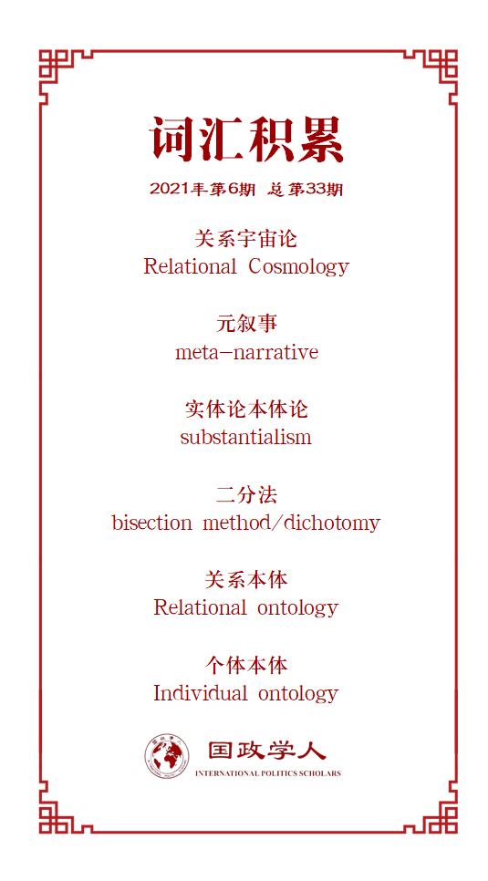

收录于合集

作品简介
【作者】 Milja Kurki（库尔基），阿伯里斯特威斯大学国际政治系研究主任。主要研究国际关系的概念和理论问题，以及政治和政策的影响，民主问题。著有《国际关系中的因果关系：因果关系分析的再现》、《关系宇宙中的国际关系》等。
【编译】 赵怡雯（国政学人编译员，山东大学国际政治与经济系）
【校对】 廖泽玉
【审核】 江若婵
【排版】 秦子宁
【美编 】游钜家
【来源】 Kurki, M. “Relational revolution and relationality in IR: New conversations.” Review of International Studies (2021):1-16.
【归档】 《国际关系前沿》2021年第6期，总第33期。
期刊简介
《国际研究评论》（Review of International Studies）是由剑桥大学出版社代表英国国际研究协会出版且同行评审的国际关系学术期刊。该期刊致力于反映全球政治的性质变化和新兴的政治挑战，旨在为国际社会搭建一个可供辩论的平台用以讨论当下紧迫的全球议题。根据Journal Citation Report显示，2019年该期刊的影响因子为1.944。
国际关系中的关系革命
**和关联性：新的对话
**
Relational revolution and relationality in IR: New conversations
Milja Kurki
内容提要
在国际关系及整个社会科学中，一个多方面的关系革命正在进行。本文提出，接触多种形式的思想与实践，与自然科学和社会科学对接，对于国际关系领域中关系思想的发展具有重要意义。如果说国际关系领域的关系思想已经挑战了该领域的殖民分支和二分法分支，那么关系宇宙论也通过促进自然与社会、人与非人之间的接触，改变了现代对科学和宇宙的理解。关系宇宙论可能会促进来自世界不同地区和不同领域的多重关系对话，但其反映出的关系性和多元性取向并不是作为关系理论或国际关系的一个新的元叙事被提出的。
关键词： 关系理论 国际关系 多元理论 关系宇宙学
文章导读
01
简介
本文探讨了国际关系中各种关系形式的思想和对话的最新进展，探索了关系理论的新路径。虽然国际关系表面是关注于国际上关系的研究，但实际上没有完全投入到关系思想中去思考。我们需要在本体论、认识论和方法论之外对更深层次的关系重新定位，这不仅会动摇我们对国际的认识，也会动摇对科学、知识和现实成分的认识。
从古典建构主义到结构主义的马克思主义，关系思想的所有形式都以超越理性主义和个人主义为目标。作者关注对关系批判的新形式的不同起源：新的关系理论产生于非西方的、非科学的、批判的人类主义，倾向于超越传统的诸如建构主义和马克思主义的关系社会理论。国际关系研究中新一代的关系思想不再以欧洲为中心，甚至本质上也不再与社会科学统一。关键的是， 新的关系思想甚少致力于补充关系视角所需要的元素，而是鼓励在来自世界不同地区的、跨学科的、不同形式的关系思维和实践之间，进行多层面的关系对话。 无论探究动植物间关系方式的后人类主义，还是道家的关系思想，新的关系理论都试图改变我们对关系的观念，并探索如何思考关系。
鉴于国际关系中关系转向的重要性，本文不仅试图阐明关系理论中各分支的不同目标，还试图为国际关系领域增添新的关系视角，提出一种更广泛的自然科学和社会科学的关系转向。作者认为通过关系宇宙论，一场跨学科的关系革命正在自然科学、艺术、人文和社会科学领域共同中进行。国际关系领域也应该参与其中，以发展更加丰富的关系视角并尝试对话。
现代科学的一个关键挑战是，现代科学思想很难使自然科学和社会科学真正的、抛却事物和背景的、单纯的从关系中思考。本文将阐述将国际关系中新兴关系思想置于关系宇宙论背景之下的三个原因。
本文试图证明关系宇宙论可以有效连接并促进世界不同地区和不同领域的多个关系本体之间的对话。开放和感性的科学概念有助于促进倾听、认同以及在多元关系中跨越差异。 但其目的不在于建立关系作为元叙事的世界观。
02
国际关系中的关系转向
近期许多研究指出，国际关系充满纷争的根源在于其特定的政治、宗教和文化信仰及权力结构。许多针对国际关系实践和起源的分析指出了某些殖民主义和种族主义假设是如何影响国际关系的。例如，英国政治思想家霍布森（John Hobson）详述了不同形式的欧洲中心主义思想的不同体现方式，表明一些明示或暗示的种族主义思想体现在国际关系的历史中，也会持续影响国关领域及其理论。许多学者的研究都显示了种族主义在国际关系和国际秩序形成中发挥了重要作用。
伴随着对国际关系起源的探索，许多新的视角被发掘，尤其是关系视角。几十年来建构主义者和批判理论家将对从原子或个人视角理解世界的争论，发展为自由个人主义和现实国家主义，这对分析国际政治中的复杂关系产生了误导。而如今，这样的声音被更多样化的言论打破。
推动关系在国际关系中发挥更大作用这一观点最早是由美国的帕特里克·杰克逊（Patrick Jackson）和丹尼尔·尼克森（Daniel Nexon）提出的。他们认为只有国际进程中的关系性质以及国家本体得到适当承认，才能真正进入对国际关系的分析。虽然本体论有其作用，但在思考全球变化时更应遵循关系路径。
帕特里克和丹尼尔开启了国际关系中对原子论和本体论的批判。随后几十年间，建构主义提出个人是在与他人的社会关系中构成的，国际关系所有知识来自社会行为体间相互构成的关系及其共有理解。马克思主义强调个人主义本体论造成了我们对社会结构关系的构成方式的深刻误解。女性主义强调性别秩序的社会建构。后殖民主义认为本质主义叙事的建构掩盖了全球范围内自我与他者的深层关系建构。这些批判性观点在一定程度上激发了国际关系产生一套崭新的、明晰的、更加全球性的关系视角。
安娜·阿加吉洛（Anna Agathangelou）和莉莉·凌（Lily Ling）在女性主义和后殖民主义思想的基础上，试图为世界政治提供一种基于多重世界概念的视角和方法。他们认为自我与他者在根本上是相互联系的，引导人们去聆听并接受多个视角。世界主义是指社会关系创造了世界，提出关系唯物主义的方法。莉莉·凌以佛教和道教为基础发展关系理论，认为自我与他者是以关系的方式联系在一起，因此即便是敌友也很难分裂。
这并非唯一借鉴亚洲传统文化的关系理论。中国学者秦亚青在《世界政治中的关系理论》中，提出一种与中国儒家传统思想和实践相关的、独特清晰的思维方式。儒家强调关系的世界和联系的宇宙，从对世界文化的理解中探索国际关系。秦亚青的世界政治关系理论取代了西方的理性行为者模型，揭示了文化背景对理解世界政治的影响。
关系理论不仅是在中国或亚洲语境中发展起来的。罗比·希利姆（Robbie Shilliam）通过太平洋文化传统，发展出了思考关系的新视角。在《黑色太平洋》中他提出了“深层关系”，即藏在殖民创伤下的关系。他提供了一种新的更协调的方式理解世界，在这里，人性的精神相互关联，因而将不同但相关的事物结合在一起。每个人都是必须被关注的可关联的实体。
近年来，世界各地的研究者参与关系理论的讨论，对人性、环境、自然进行探索。 以关系的方式处理国际关系意味着关注他者和其他形式的认知和存在，不评判好坏，而是将他们作为整体的关键元素。 关系革命的目的是提供处理国际关系的新方式，用不同的方式看待“相同与不同”。 发展全球关系理论的重要干预措施指出发展新的关系式的全球性的联系的重要性。
关系思想还关注人类中心主义。在新关系思想中关注诸如人与非人、文化与自然的存在问题的定义和区分。希望取代西方传统二分法，将国际关系纳入人类范围考虑，扭转人类不平等和非人的影响被排斥在国际关系之外的传统政治观念。
一些学者将恢复次等宇宙的感知力和对国际关系中传统的人文主义批判结合起来。例如，阿玛亚（Amaya Querejazu）提出认识非西方的宇宙理论的多样性和相关性，并恢复和探索其他将国际关系中主客体联系起来的方法，主张关系存在的多样性，包括人与非人之间共存的可能性。
关系理论内部虽存在争论，但众多正在发展的观点，已经共同导致了国际关系中的关系转向。
作者从这些观点中总结出三个关键要素：
1.多元性。 新的关系视角代表着许多声音、经验和关系的展开，是为了推动国际关系去殖民化而形成真正的一个世界。这些观点使概念工具得以拓展了人们探索欣赏经验和存在的各种方式。多元宇宙的概念可以使人们从单一世界的多种声音的观点转向多个世界的想象。
2.重新关联。 国际关系中多元视角的目的是，在认识不同世界的共同关注世界之间的关系连接。用认真的聆听、同理心和关系的情感对待自己不熟悉的世界。重点是认识世界的多样性，不仅通过对知识的重新思考，而且通过对精神、情感和类似普遍性、客观性这样的概念的重新思考。
3.人性国际关系和非人性国际关系。 虽然处于共同的发展轨迹，但关系转向中不同的关系视角存在一些重要的分歧和差异。但这些分歧使我们看到新的关系理论蕴含的力量和重要性：关系理论不是意欲构建一个有特定概念或本体论的新范式。而是在探索、思考国际关系其中和周围的关系。
关系转向不仅反映了国际关系和权力关系的变化（远离西方中心论的传统思想），也反映了对科学、宇宙和生态挑战背景下人类在环境中发挥的作用，对一系列问题的重新理解。因此关注相互联系的宇宙学，可以帮助连接理论，并将关系理论与科学的变化联系起来。
03
关系宇宙论及其转向
美国理论物理学家李·斯莫林（Lee Smolin）提出关系革命正在世界各地和各领域进行。他认为如今科学被宗教、世俗、科学和社会的特定意象禁锢，被特定的世界观、概念和哲学所压制，缺乏了情感、联系和灵性。同时科学被去政治化了，政治和科学的分离使科学问题在某种程度上与政治问题相隔绝。关系宇宙论对上述现象发起了挑战，认为科学可以是哲学的，关系的，情境的，政治的。
作者介绍了关系宇宙学的基础，随后提出三种在宇宙关系论背景下理解国际关系中关系理论的原因：
（1）跨越艺术和科学的关系思维推动着国际关系向相似方向发展；
**
**
（2）关系思维挑战了现代主义的二分法；
（3）关系思维引导人们认识到科学是具有政治性的，是根植于世界的。
3.1 关系宇宙论
关系宇宙学是宇宙学理论家李·斯莫林（Lee Smolin）和卡罗·罗威利（Carlo Rovelli）等人从自然科学中提出的一种宇宙学观点。关系宇宙论发展了圈量子引力（LQG）的视角，从其中产生了对关系的理解。
在圈量子引力论的视角下，关系宇宙学的空间是由自旋网络形成的，宇宙的关系在其中展开。而在牛顿的位形空间中，时间和空间是作为物体的背景存在的。关系宇宙论挑战了这种理论，将背景和物体的概念从世界概念中移除。关系宇宙论认为没有所谓的事物，只有关系，强调关系是任何事物或本质概念的本体论基础，即世界是在一个展开的关系网中。在关系宇宙论下，人们无法从外界了解宇宙，只能从自身所处的关系中了解。因此所有的认知，包括物理科学的知识都只是大致的情境化的。
李·斯莫林对发展关系宇宙论对社会政治的影响颇有兴趣。他从宇宙观出发，发展了一种自然哲学的视角，强调我们应该关注人类在宇宙中扮演的角色。他与社会政治理论家罗伯托·曼加贝拉·昂格尔（Roberto Mangabeira Unger）合作，强调世界的开放性以及用一种轻松的方式来理解世界的必要性。认为理解世界的方式来自于存在于世界中的关系，而非试图抓住世界本质的愚笨的形而上学。他们认识到科学理论的局限性，因此呼吁对复杂的关系现实持开放的态度，用现实来检验审美直觉，用大脑理解我们与周边的关系。
他们还将科学问题与民主问题联系起来，重新构想。斯莫林强调作为民主的科学是一种开放的伦理，是一种探索处于不同环境中的其他人的观点、经验和现实的伦理。
作者在下文阐述了关系宇宙论与国际关系领域关系转向相关联的三个原因。
3.2 共同的行进方向
关系宇宙学的有趣之处在于，它从科学发现中得出一系列挑战现有科学研究和与世界联系范式的命题。传统西方科学的概念划分使得一些宇宙学模式被发现，但同时限制了我们理解宇宙传递给我们的信息的能力。因此需要撤销和重塑概念工具，重组与世界的关系。
在这一调整中，与后殖民主义和后人类主义一致，强调以关系的方式理解世界。强调知识构建活动中根本的、不可避免的关系本质，主张不依赖客观外部和普遍权威规律的科学。普通的法则或概念使人们无法欣赏关系的美妙。然而，否认普世主义并不否认我们有能力试图产生一些一般性原则，这些原则是非殖民的、情境的科学，且必然能够发展。
3.3 超越二分法
关系宇宙论批判现代主义对个体存在进行分类的做法，尤其是通过二分法。是因为过于强调物质世界的本体使人们僵硬地用二分法树立了世界观，而这严重限制了人们的思考。因此关系宇宙论致力于开放分类，而不是禁锢类别，在处理关系的过程中，不断延伸，产生新的理解和关系，重新融入世界。
3.4 多元宇宙中的科学与民主共同体
科学不是权威科学，而是在关系对话中产生的合作的非殖民的宇宙科学。宇宙关系论下的民主不是选举投票的“自由民主”，而是一种代表“他者”与关系的精神观念。科学成为处理和探索宇宙关系中情境关系的一部分。由此，对民主可能性以及“社会”和“代表制”的含义的重新思考已经开始。同时，科学推动了在人与非人社会的关系多样性中促进新型的民主共同体形式的形成。
在关系宇宙中，没有分析的层次，也没有界限分明的学科边界。一切都是模糊的，也因此面临以不同方式共同思考的挑战。这意味着，在宇宙政治中，对政治的思考不仅包含人类，还应包含动物、植物、矿物等非人类。
04
关系对话和对国际关系及周围共同体的重新思考
一些国际关系学者对促进全球国际关系、后人类关系、关系国际关系持质疑的态度。例如，有批评家指出阿米塔·阿查亚的全球国际关系与传统国际关系的取向没有太大不同。认为后人类主义者在强调人与非人的关系时会忽视人类才是国际关系的中心。有批评者进一步指出，关系理论没有为国际关系的经典问题提出解决方法。也有人认为急于参与科学研究的社会科学家有误解科学或过度扩展科学对社会影响的风险。
然而这些批判并不理解关系宇宙中新的评估标准。在关系宇宙中，实证主义的标准不复存在，因为它们已经被现代科学本身的发现边缘化了。重点是在一个关系宇宙中，很难得到确定的新的评价标准。
但宇宙关系论认为人类是世界的一部分，并在创造世界。只是提出由于人类认知的有限性，使人类总是从特定的角度接触世界，并与之建立固定的联系。关系探索的关键是“伸展”精神，摆脱对世界的概念化，从而重新“自我”地进入世界。关系革命不仅改变了知识产生的方式，也改变了“划分”世界的方式。关系革命还改变了“谁应该被纳入对话中”的问题，在关系的宇宙中人们也不再是孤立的、自主的、与他人无关的。同时也开始思考如何“科学”地学习政治民主。
在新的对话中，人们扩展了视野，建立了新的关系模式。以这种方式建立关系的模式是什么，用这些方法处理关系取代以往国际关系理论和社会理论有什么政治意义。作者认为关于关系的探索与争论刚刚开始，未来将开展许多重要对话。
05
结论:下一个世纪国际关系中的关系对话
在国际关系发展的第二个世纪，将出现新的不同部分，因此继承和变革都是必要的。权力关系、如何运用不同的观点以及对周围环境的科学认知都发生了很大的变化。
关系视角直接反映了已经发生的改变。卡赞斯坦（Peter Katzenstein）指出，关系视角明确地将不确定性和流动性构建到关系框架中，与牛顿主义和现代主义想要固定、稳定、秩序和管理的理念背道而驰。
那么关系宇宙论会给国际关系带来什么影响，作者列出了三种可能出现的具体对话或研究议程。
1.关于人类主义、后人类主义和殖民思想的对话。 关注人类主义和后人类主义的讨论，探索是否存在非关系型关系（即关系思维都无法发现的关系）的可能。
2.新的关系维度。 有学者最新指出，关系思维在无意间使用了空间的隐喻和概念，但未能思考关系是如何随时间而变化的。关系的相关或不同的隐性维度需要进一步的思考和讨论。
3.有关民主、科学以及跨学科伦理实践或精神意味着什么的问题。 关系的思想和实践使得各领域各学科共同开启关于民主的对话。这些对话在新冠疫情，社会秩序和自然秩序性质不断变化的背景下，对国际关系中的全球政治争论和重新思考民主政治显得尤为重要。
关系宇宙学作为一种视角，是我们理解国际关系、社会科学及科学中关系转向重要性的一种方式。在一个关系的宇宙中，我们彼此交织，也因此能够重新思考我们交谈、存在和将要成为的方式。国际关系的任务则是解开关系所产生的纠缠。
译者评述
本文详细梳理了国际关系领域中关系理论的不同声音，将关系宇宙论引入国际关系领域。正如作者所言，关系理论虽挑战了传统理论的根基，但并非致力于建立单独的元叙事或范式。关系理论是作为对传统理论的反思和补充而存在的，为我们思考人类存在于世界的形式以及思考如何与周边共处提供新的视角。
关系宇宙论及关系理论首要强调的是个人在整个系统中是同等重要的因素，个人与他者、与其他事物的联系构建起了整个世界。因此传统西方将个体本体置于首位的基础值得质疑。也正是基于此我们才应该通过发展新的关系理论，强调关系本体，将世界视为关系交织下的形成的。这有助于我们跳出传统西方国际关系理论的束缚，针对世界面临的新情况新问题，用创新的思维寻求解决路径。被禁锢着的思想是无法实现突破，并引领世界向全新的互联的方向发展。有关关系理论的诸多探讨和发展或许能够使“水”活起来，并向前流动。
词汇整理

文章观点不代表本平台观点，本平台评译分享的文章均出于专业学习之用, 不以任何盈利为目的，内容主要呈现对原文的介绍，原文内容请通过各高校购买的数据库自行下载。
好好学习，天天“在看”
国政学人
支持学术公益与知识传播
微信扫一扫赞赏作者 __赞赏
已喜欢，对作者说句悄悄话
取消 __
发送给作者
发送
最多40字，当前共字
上一页 1/3 下一页
长按二维码向我转账
支持学术公益与知识传播
受苹果公司新规定影响，微信 iOS 版的赞赏功能被关闭，可通过二维码转账支持公众号。